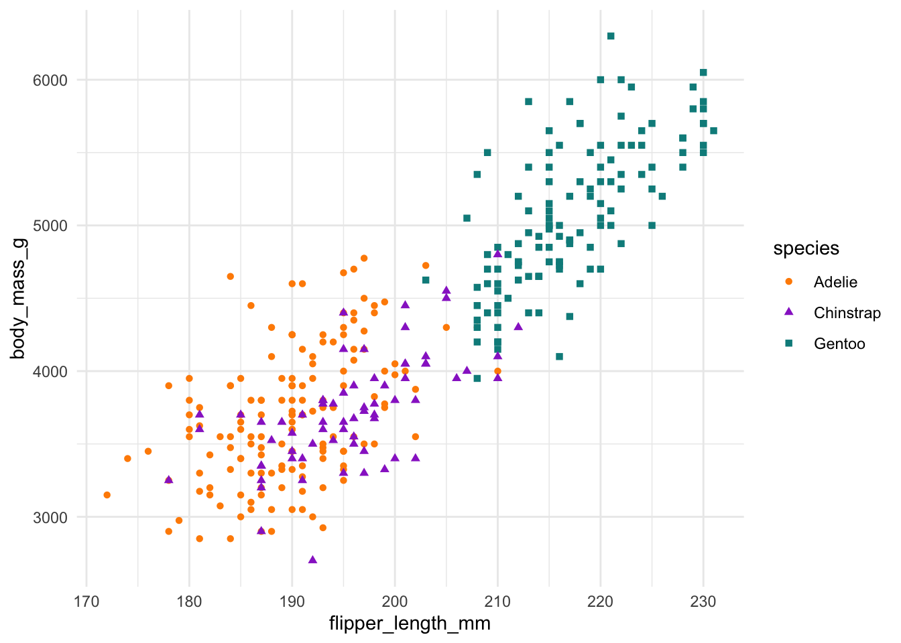

penguins |>
ggplot() +
aes(x = flipper_length_mm, y = body_mass_g) +
geom_point(aes(color = species, shape = species)) +
scale_color_manual(values = c("darkorange", "darkorchid", "cyan4")) +
theme_minimal()

Este é o nossa primeira tentativa de relatório feito com Quarto1.

\[ y = ax + b \]
| Col1 | Col2 | Col3 |
|---|---|---|
| x | 1 | a |
| y | 2 | b |
| z | 3 | c |
| 1 | 2 | 3 |
Neste projeto, usamos os pacotes:
tidyverse
palmer penguins
renv
Na Figura 1, vemos o gráfico
penguins |>
ggplot() +
aes(x = flipper_length_mm, y = body_mass_g) +
geom_point(aes(color = species, shape = species)) +
scale_color_manual(values = c("darkorange", "darkorchid", "cyan4")) +
theme_minimal()# library(tidyverse)
# Uma forma de encontrar o caminho
# arquivo_para_ler <- "../dados/sidrar_4092_bruto_2.csv"
# pasta atual - pasta onde o arquivo quarto (.qmd) está salvo
# "./"
# pasta superior
# "../"
arquivo_para_ler <- here::here("dados/sidrar_4092_bruto_2.csv")[1] "/Users/beatrizmilz/Desktop/ipea-intermediario-2025"[1] "/Users/beatrizmilz/Desktop/ipea-intermediario-2025/dados/sidrar_4092_bruto_2.csv"[1] "/Users/beatrizmilz/Desktop/ipea-intermediario-2025/relatorios"Rows: 27,000
Columns: 13
$ `Nível Territorial (Código)` <dbl> …
$ `Nível Territorial` <chr> …
$ `Unidade de Medida (Código)` <dbl> …
$ `Unidade de Medida` <chr> …
$ Valor <dbl> …
$ `Unidade da Federação (Código)` <dbl> …
$ `Unidade da Federação` <chr> …
$ `Trimestre (Código)` <dbl> …
$ Trimestre <chr> …
$ `Variável (Código)` <dbl> …
$ Variável <chr> …
$ `Condição em relação à força de trabalho e condição de ocupação (Código)` <dbl> …
$ `Condição em relação à força de trabalho e condição de ocupação` <chr> …# A tibble: 5 × 3
species island n
<fct> <fct> <int>
1 Gentoo Biscoe 124
2 Chinstrap Dream 68
3 Adelie Dream 56
4 Adelie Torgersen 52
5 Adelie Biscoe 44knitr::kable():
| Espécie | Ilha | Quantidade |
|---|---|---|
| Gentoo | Biscoe | 124 |
| Chinstrap | Dream | 68 |
| Adelie | Dream | 56 |
| Adelie | Torgersen | 52 |
| Adelie | Biscoe | 44 |
A base de dados penguins apresenta pinguins de 3 espécies: Adelie, Gentoo e Chinstrap. A base possui 344 observações (sendo que cada observação corresponde a um pinguim) e 8 variáveis: species, island, bill_length_mm, bill_depth_mm, flipper_length_mm, body_mass_g, sex, year. A coleta de dados foi feita em três ilhas: Torgersen, Biscoe, Dream, entre os anos de 2007 e 2009.
O município com maior IDHm no ano de 2010 é SÃO CAETANO DO SUL (SP) com um IDHm de 0.862. Por outro lado, o município com menor IDHm é MELGAÇO (PA) com um IDHm de 0.418.
Versão Luiz:
A base pnud_min possui 16686 linhas referentes ao número de municípios. As colunas tem os seguintes nomes: ano, muni_id, muni_nm, uf_sigla, regiao_nm, idhm, idhm_e, idhm_l, idhm_r, espvida, rdpc, gini, pop, lat, lon. Por exemplo, idhm é o idh municipal, o maior deles é 0.862 do município SÃO CAETANO DO SUL, localizado no estado de/do SP
O Quarto é a nova geração do RMarkdown.↩︎